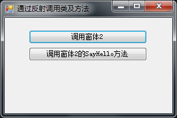
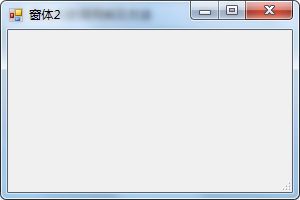

反射有个典型的应用，就是菜单的动态加载，原理就是通过反射调用某个窗体(类)。下面演示一下通过反射调用类及方法：
1、新建一个类，命名为：ReflectionHelper，代码如下：
#region 创建对象实例
/// <summary>
/// 创建对象实例
/// </summary>
/// <typeparam name="T">对象类型</typeparam>
/// <param name="assemblyName">程序集名称</param>
/// <param name="nameSpace">命名空间</param>
/// <param name="className">类名</param>
/// <returns></returns>
public static T CreateInstance<T>(string assemblyName, string nameSpace, string className)
{
try
{
//命名空间.类名,程序集
string path = nameSpace + "." + className + "," + assemblyName;
//加载类型
Type type = Type.GetType(path);
//根据类型创建实例
object obj = Activator.CreateInstance(type, true);
//类型转换并返回
return (T)obj;
}
catch
{
//发生异常时，返回类型的默认值。
return default(T);
}
}
#endregion
#region 调用方法实例
/// <summary>
/// 调用方法实例
/// </summary>
/// <typeparam name="T">对象类型</typeparam>
/// <param name="assemblyName">程序集名称</param>
/// <param name="nameSpace">命名空间</param>
/// <param name="className">类名</param>
/// <returns></returns>
public static T GetInvokeMethod<T>(string assemblyName, string nameSpace, string className, string methodName, object[] paras)
{
try
{
//命名空间.类名,程序集
string path = nameSpace + "." + className + "," + assemblyName;
//加载类型
Type type = Type.GetType(path);
//根据类型创建实例
object obj = Activator.CreateInstance(type, true);
//加载方法参数类型及方法
MethodInfo method = null;
if (paras != null && paras.Length > 0)
{
//加载方法参数类型
Type[] paratypes = new Type[paras.Length];
for (int i = 0; i < paras.Length; i++)
{
paratypes[i] = paras[i].GetType();
}
//加载有参方法
method = type.GetMethod(methodName, paratypes);
}
else
{
//加载无参方法
method = type.GetMethod(methodName);
}
//类型转换并返回
return (T)method.Invoke(obj, paras);
}
catch
{
//发生异常时，返回类型的默认值。
return default(T);
}
}
#endregion2、新建一个WinForm窗体，命名为Main，添加两个按钮。

3、新建一个WinForm窗体，命名为Form2。

4、Form2窗体的代码如下：
public string SayHello()
{
return "Hello World.";
}5、Main窗体的代码如下：
/// <summary>
/// 调用窗体2
/// </summary>
/// <param name="sender"></param>
/// <param name="e"></param>
private void button1_Click(object sender, EventArgs e)
{
Form form2 = ReflectionHelper.CreateInstance<Form>("LinkTo.Test.WinForm", "LinkTo.Test.WinForm.Reflection", "Form2");
form2.ShowDialog();
}
/// <summary>
/// 调用窗体2的SayHello方法
/// </summary>
/// <param name="sender"></param>
/// <param name="e"></param>
private void button2_Click(object sender, EventArgs e)
{
string result = ReflectionHelper.GetInvokeMethod<String>("LinkTo.Test.WinForm", "LinkTo.Test.WinForm.Reflection", "Form2", "SayHello", null);
MessageBox.Show(result, "提示", MessageBoxButtons.OK, MessageBoxIcon.Information);
}